El brasileño Ronaldo de Assis Moreira , conocido como " Ronaldinho " , se coronó hoy soberano de la clasificación de los goleadores del preolímpico suramericano y de los 200 futbolistas de diez países que tomaron parte de la undécima edición de este torneo eliminatorio.
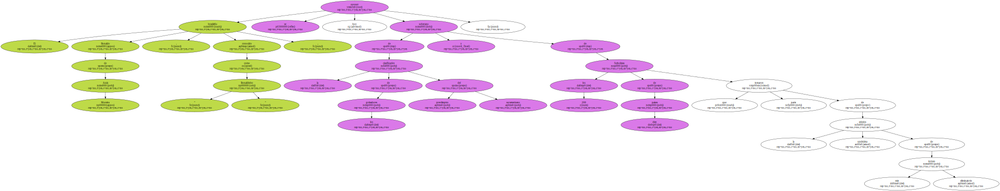Ronaldinho Gaúcho anotó nueve goles en los siete partidos de la selección sub`23 de Brasil , que con su victoriosa campaña facturó no sólo el boleto para los Juegos Olímpicos de Sydney , sino el séptimo título en la historia de la competición , que se remonta a 1960.
Curiosamente , los únicos partidos del preolímpico que Brasil no ganó fueron también los únicos en que el joven Ronaldinho Gaúcho no se hizo presente en el marcador.
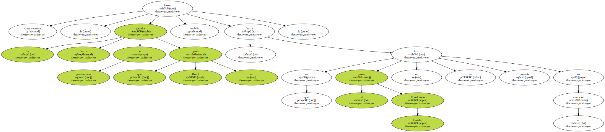No marcó en el empate del partido inaugural ( 1-1 ante Chile ) y tampoco hoy , en la igualada frente a Uruguay ( 2-2 ).
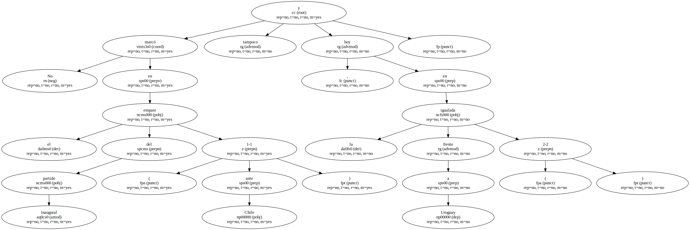Con las nuevas distinciones de campeón del preolímpico , líder de los artilleros y mejor jugador del torneo , Ronaldinho ha confirmado su condición de " rey " del fútbol en América con apenas 19 años de vida y uno de vigencia en el fútbol internacional.

Apareció en la Copa América que se disputó en Paraguay el año pasado.
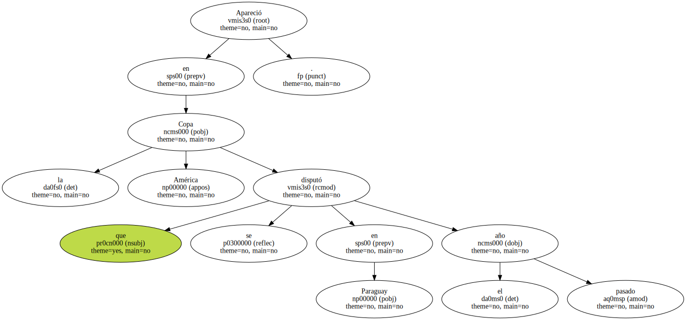Un tímido , alto y delgado muchachito de prominentes dientes superiores que le dan una sonrisa permanente apareció en el segundo tiempo del partido que Brasil le ganaba con holgura a Venezuela en el estadio " Tres de Febrero " de Ciudad del Este.
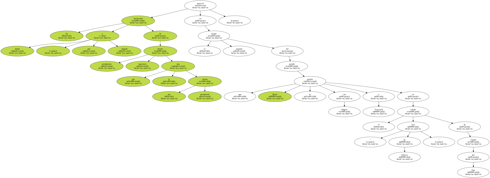En su primera intervención , el talismán del club Gremio se internó por la punta derecha del área para recibir un pase que no dejó caer en el césped , dominó el balón con su bota hasta pasarlo por encima de un defensor y llegar hasta la cara del portero Renny Vega , a quien fusiló sin apelaciones.
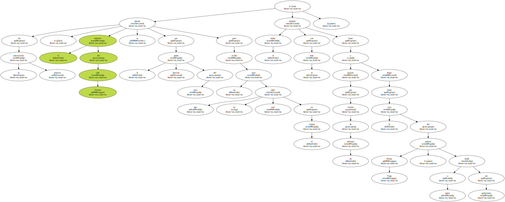La maniobra que antecedió y la que siguió al " sombrero mexicano " que le hizo con el balón a su marcaje hicieron del gol uno de los más antológicos del torneo americano de selecciones y bautizaron la carrera de Ronaldinho.
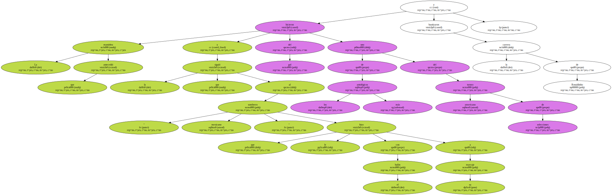Hasta su aparición letal en la Copa América , Ronaldinho había destacado en las selecciones juveniles de Brasil y era un promisorio alternante en la plantilla profesional del Gremio.
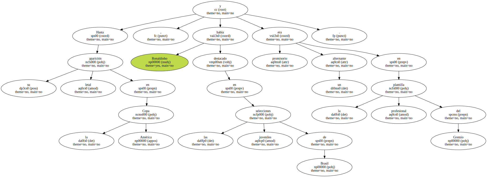Semanas después de la conquista brasileña de la última edición en este siglo de la Copa América , el seleccionador Wanderley Luxemburgo desplazó a México a Ronaldinho y otros jugadores de esa plantilla para afrontar la Copa de las Confederaciones.
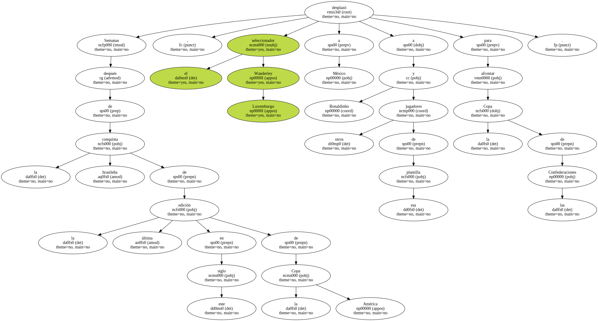Los anfitriones le arrebataron el trofeo a los brasileños , en una final llena de goles ( 4-3 ) , pero como gran consuelo Ronaldinho fue proclamado como el mejor jugador de la competición.
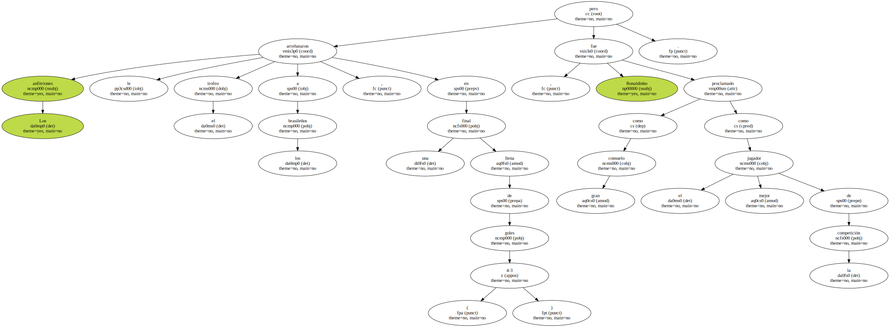Seguro de haber ganado por méritos un pasaje a Australia para disputar los Juegos Olímpicos de Sydney y la posibilidad de ayudar a Brasil a conquistar el único título internacional que falta en su victorioso currículum - la medalla de oro - Ronaldinho se prepara para cosechar en esta temporada otra larga lista de éxitos.
Hasta el momento , en las 57 convocatorias a selecciones de su país anotó treinta goles en los 56 partidos que disputó.
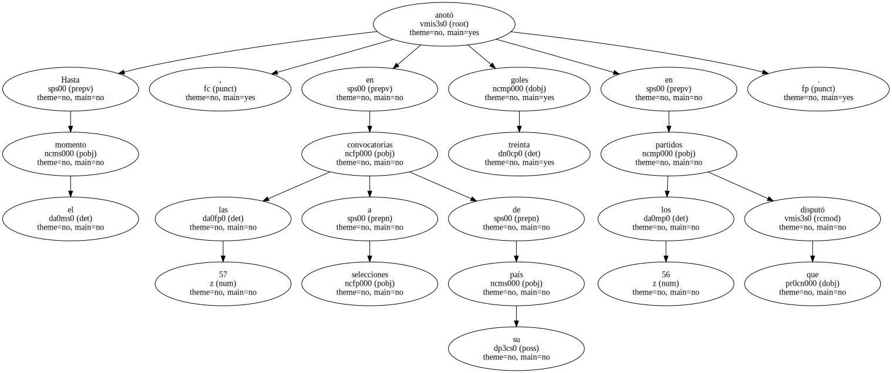Mientras septiembre llega y con ese mes los Juegos de la vigésimo séptima Olimpiada , en la ciudad de Londrina Ronaldinho cuenta las horas para regresar a su casa , en Porto Alegre.
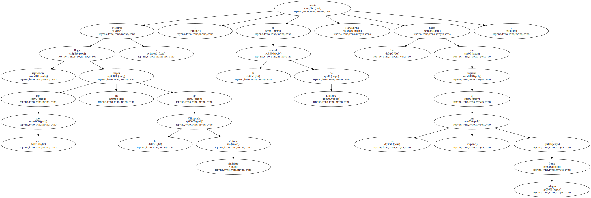Su motivo no es la gran fiesta que deben estar preparando su madre , hermanos , demás familiares y amigos por la campaña del torneo Preolímpico.
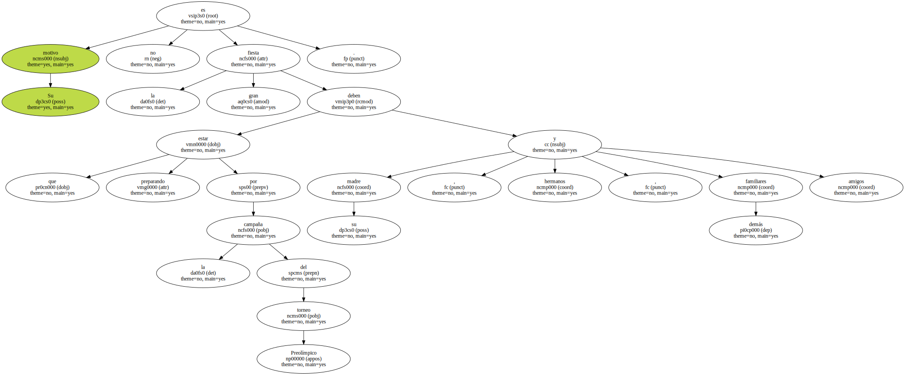" Es que tengo una consulta programada para someterme a un tratamiento para alinear mis dientes " , dijo recientemente en una charla con periodistas.
" No es por vanidad . Es porque con el correctivo voy a mejorar mi respiración " , explicó con la humildad de siempre el " niño terrible " de la selección brasileña.
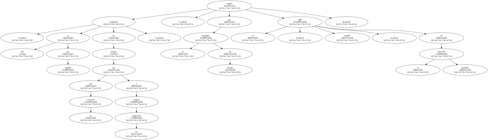Las preguntas arreciaron y pasaron del terreno de lo futbolístico a lo íntimo.
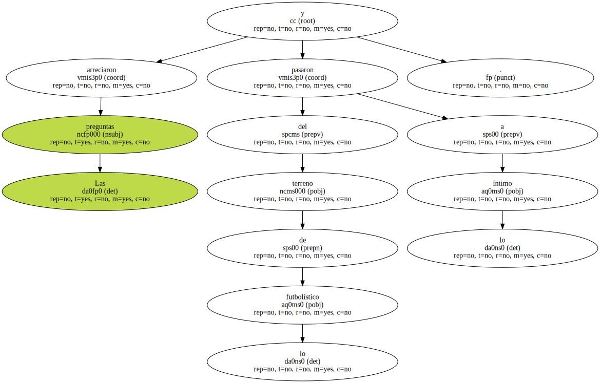Que si la implantación de frenillos dentales también estaba motivada por la presencia de alguna chica.
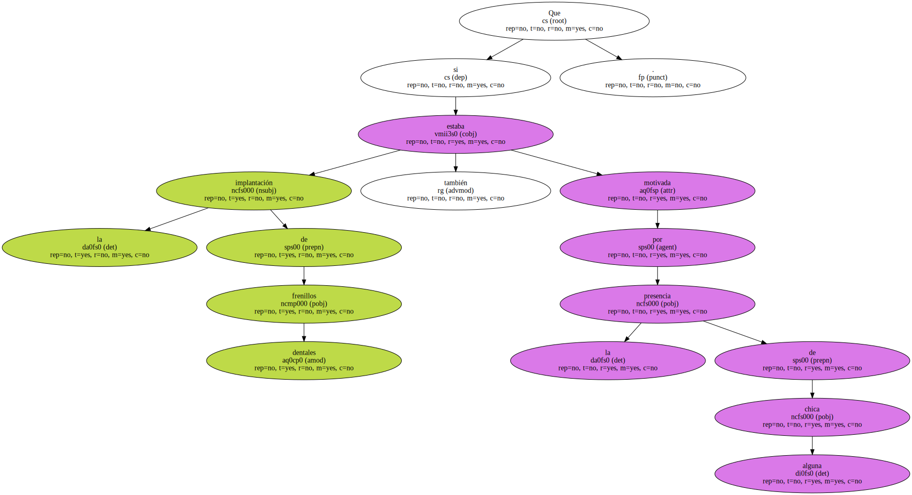que si pretendía someterse a otro " ajuste estético " ... " No lo necesito ".

" Sé que soy un feo simpático y así estoy muy contento " , manifestó el nuevo " matador " de los brasileños.
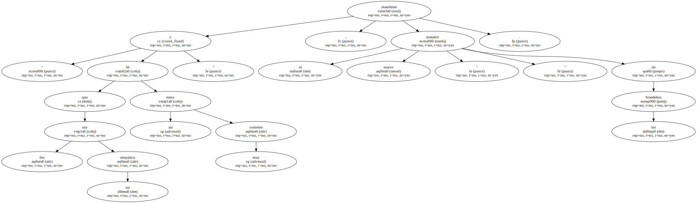